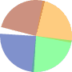

<md-card *ngIf="poll">
  <md-card-title>{{ poll?.title }}</md-card-title>
  <md-card-subtitle>Created by {{ poll?.creator }}</md-card-subtitle>
  
  <md-card-content>
    <canvas baseChart *ngIf="poll !== undefined"
      class="chart"
      [chartType]="'pie'"
      [datasets]="poll?.datasets"
      [labels]="poll?.options"
    >
    </canvas>
  </md-card-content>

  <md-card-actions>
    <form fxLayout="row" fxLayoutWrap="nowrap" fxLayoutAlign="space-between">
      
      <!-- Option Selection Dropdown -->
      <md-select 
        placeholder="Choose an option" 
        *ngIf="selectedOption !== 'custom'"
        [(ngModel)]="selectedOption" 
        name="select">
        <md-option *ngFor="let option of poll?.options" [value]="option">
          {{ option }}
        </md-option>
        <md-option *ngIf="isLoggedIn" value="custom">Create Your Own Option</md-option>
      </md-select>

      <!-- Custom Option Cancel Button and Input -->
      <button md-icon-button *ngIf="selectedOption === 'custom'" (click)="cancelCustomOption()">
        <md-icon>cancel</md-icon>
      </button>

      <md-input-container *ngIf="selectedOption === 'custom'" fxFlex="1 1 auto">
        <input 
          md-input
          placeholder="Create Your Own Option" 
          name="customOption" 
          [(ngModel)]="customOption">
      </md-input-container>

      <!-- Submit Button -->
      <button md-raised-button 
        color="primary" 
        [disabled]="!selectedOption || (selectedOption === 'custom' && !customOption)" 
        (click)="submitVote()">
        <md-icon>send</md-icon> Submit
      </button>
    </form>
  </md-card-actions>
</md-card>

<!-- Loading Box -->
<div class="loading" *ngIf="!poll" fxLayout="column" fxLayouAlign="center">
  <h3 fxFlexAlign="center">Loading your Poll</h3>
  
</div>
